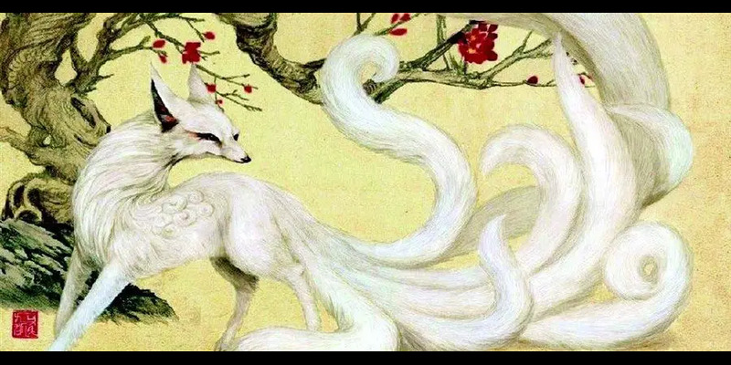
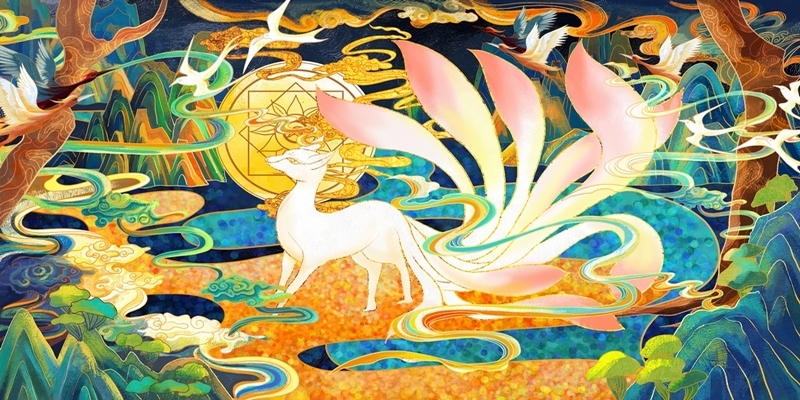
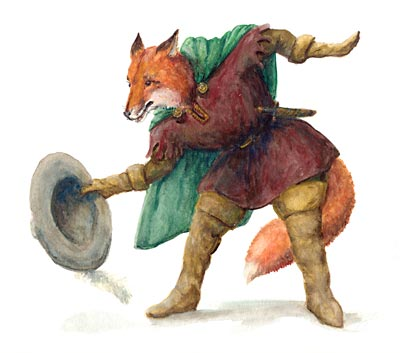

Introduction
Les renards occupent une place particulière dans de nombreuses mythologies à travers le monde. Leur comportement rusé, leur capacité à se fondre dans leur environnement et leur apparence intrigante en font des créatures idéales pour incarner des qualités humaines ou des forces mystiques.
Les Kitsune dans la mythologie japonaise
Dans le folklore japonais, les Kitsune sont des esprits renards considérés comme des êtres mystiques et souvent liés à la divinité Inari. Les Kitsune possèdent la capacité de se transformer en humain, souvent pour accomplir des tâches divines ou pour interagir avec les mortels. Certains Kitsune sont bienveillants, protégeant les humains et apportant la prospérité, tandis que d'autres sont malicieux, utilisant leur ruse pour jouer des tours ou tromper.
Ils sont également associés au pouvoir surnaturel, avec leurs queues symbolisant leur âge et leur sagesse. Les renards à neuf queues, les plus puissants, sont capables de réaliser des exploits magiques impressionnants.
Les renards dans la mythologie nordique
Dans les légendes nordiques, les renards sont souvent des symboles de survie et de ruse. Bien que moins présents que dans d'autres mythologies, ils sont parfois représentés comme des guides spirituels ou des messagers des dieux. Leur capacité à survivre dans des environnements rudes comme les forêts froides du nord reflète les défis auxquels les populations nordiques étaient confrontées.
Les renards sont également parfois associés à Loki, le dieu farceur, connu pour sa ruse et ses capacités à tromper les autres dieux.
Les renards dans la mythologie amérindienne
Chez les peuples amérindiens, le renard est une figure ambivalente. Pour certaines tribus, comme les Lakota, il est vu comme un guide spirituel, aidant les humains à se connecter avec le monde des esprits. D'autres tribus, comme les Navajo, le perçoivent comme un farceur (trickster), utilisant sa ruse pour défier les règles ou enseigner des leçons par des histoires morales.
Les contes amérindiens mettent souvent en scène des renards aidant les héros ou défiant les dieux, symbolisant à la fois la sagesse et l'impermanence des choses.
Les Huli Jing dans la mythologie chinoise
En Chine, les Huli Jing sont des esprits renards légendaires capables de transformations magiques. Ces créatures, souvent représentées avec neuf queues, incarnent la séduction, la ruse et le pouvoir mystique. Contrairement aux Kitsune japonais, les Huli Jing sont souvent perçus comme des êtres ambigus, alternant entre bienveillance et malveillance selon leurs intentions.
Ils apparaissent fréquemment dans les légendes chinoises comme des personnages séducteurs ou des protecteurs de la nature, symbolisant l’équilibre entre le spirituel et le terrestre.
Les renards dans le folklore européen
En Europe, le renard est un personnage central du folklore. Dans les contes médiévaux français, par exemple, le célèbre Roman de Renart décrit un renard rusé et espiègle, capable de tromper des personnages plus puissants comme le loup ou le roi. Ces histoires illustrent la fascination pour la ruse et l’intelligence face à la force brute.
Les renards apparaissent également dans les contes germaniques et britanniques, souvent en tant que figures représentant l'esprit indépendant et l'ingéniosité face à l'adversité.
